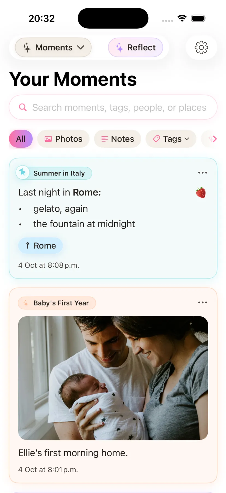
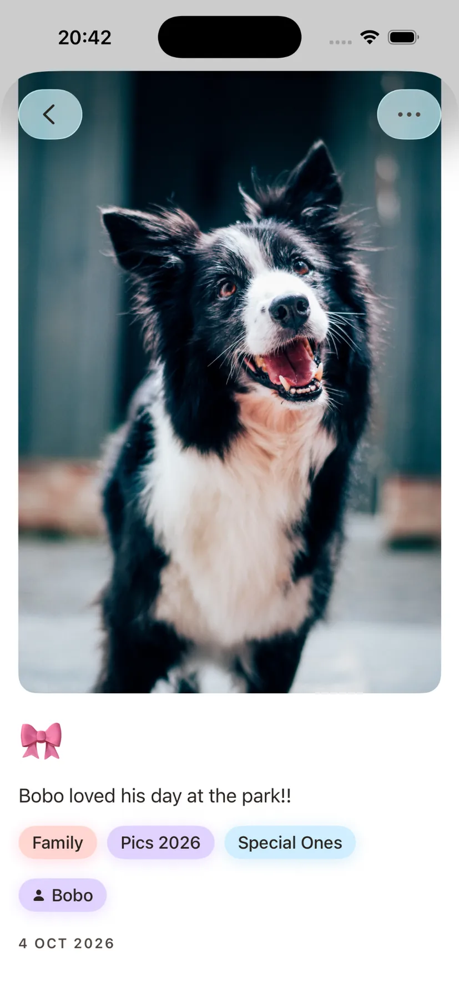
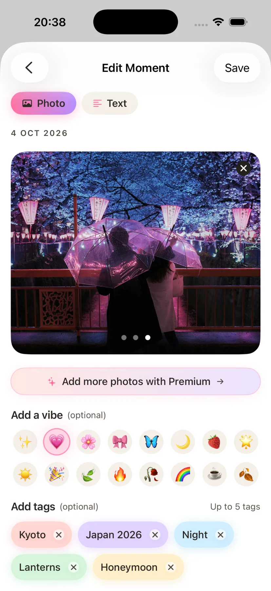
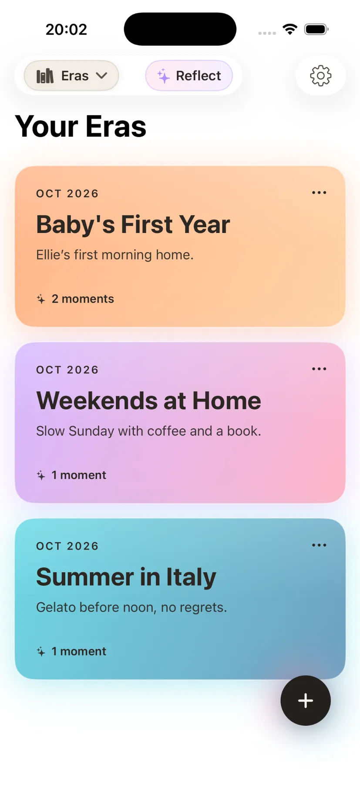
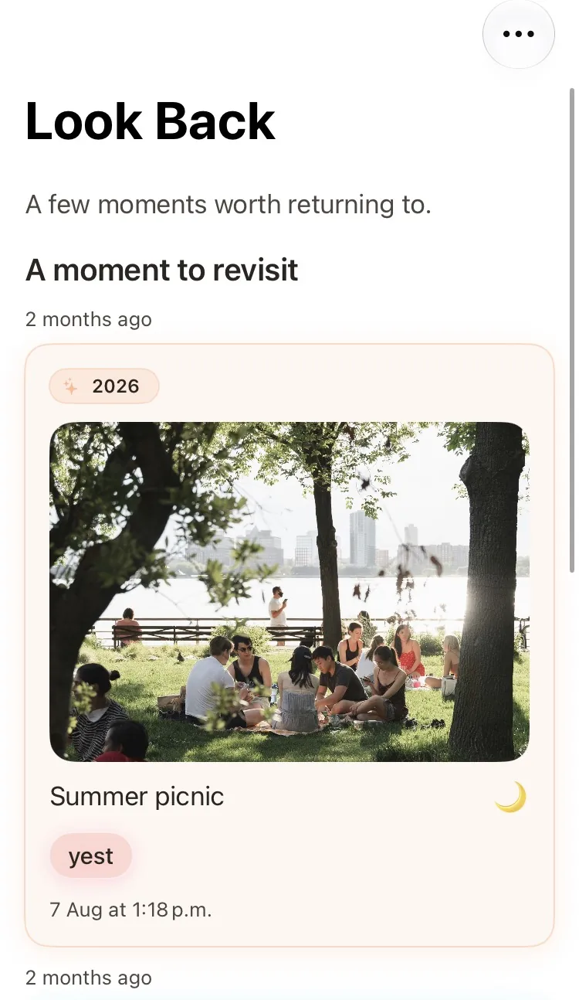
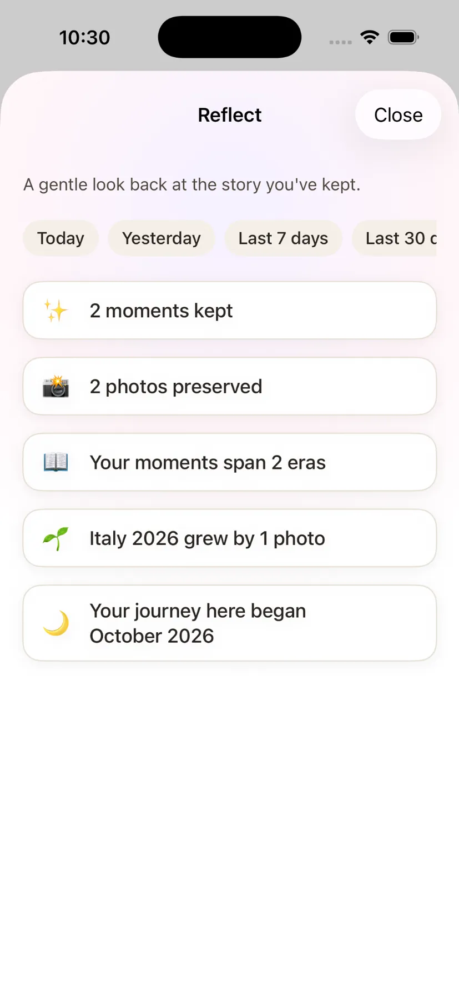

The best journal app for iPhone should help you keep your life.
Not another thing to keep up with. A beautiful place for the photos, little details and stories you don't want to lose.
That's what we're making with Stillkeep.
For iPhone · Free to start · Photos + writing · Private by design


Your camera roll has the pictures.
What about the stories?
Sometimes the most meaningful memories are ordinary: a walk with your dog, the last night of a holiday, a quiet Sunday at home.
Photos show what happened. A few words help you remember why it mattered. Stillkeep brings them together, without turning journaling into homework.
A little more meaning.
A lot less effort.
Everything you need to capture a moment, give it a place, and find it again.

Keep the photo.
Keep the feeling.
Make a Moment with a photo, a note, or both. Add little touches like tags and vibes when you want to. No blank page staring back at you.
Give your life
its own chapters.
A summer in Italy. Your baby's first year. The wonderfully unremarkable weekends. Group Moments into Eras that mean something to you.
Because life isn't just a chronological feed.



Good memories deserve
a second look.
Revisit moments you might have forgotten, and see the story you've been keeping grow over time. Sometimes the best part of journaling is coming back.
We don't think a great journal should feel like another daily obligation.
Some days you'll write a paragraph. Some days you'll save a photo. Some weeks you won't add anything at all. Your memories are still worth keeping.
What makes the best journal app for you?
For us, it's one you'll genuinely enjoy using. Here are the things we care about most when building Stillkeep.
Easy to return to. Save a memory in the moment, or whenever you feel like it.
Made for photos and words. Neither has to come first.
Organised around your life. Find a person, place, tag or chapter later.
A space that feels yours. Stillkeep is designed for private iPhone journaling, with iCloud syncing and ways to export your memories.
Different journals suit different people.
There are plenty of ways to journal on iPhone, including Apple's Journal app, Day One and Journey. We aren't here to rank them. We're building Stillkeep for people who want an easy, personal home for photos, stories and the chapters of their lives.
More about why we built StillkeepA few questions, answered.
Is Stillkeep a free journal app for iPhone?
Yes. You can download Stillkeep and start journaling for free. Optional Premium features are available in the app.
Can I make a photo diary instead of writing every day?
Absolutely. Keep a photo, a written note, or both as a Moment. There's no need to write a full diary entry every day.
Can I organise my journal into chapters?
Yes. Stillkeep calls them Eras. You can create chapters for holidays, family milestones, seasons or anything else that matters to you.
How does Stillkeep handle privacy?
Stillkeep is built with private, iPhone-first journaling in mind and uses Apple's iCloud infrastructure for sync. For technical details, read our iCloud sync explanation and website privacy information.
Can I look back at old memories?
Yes. Look Back helps you revisit Moments, while Reflect gives you a gentle view of what you've kept over time.
What is the best journal app for iPhone?
That depends on whether you prefer daily writing, prompts, or photos and memories. If you want a private, visual journal with Moments, life chapters and ways to revisit them, Stillkeep is worth a try.
Keep the little things.
They become the big things.
Start with one photo, one sentence, one moment you don't want to forget.
Get Stillkeep free